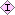

In a complex project, it is possible to have many different relationships between classes, instances, and slots. The Back-References pane allows you to view a list of all the frames that reference the selected frame.
The following information is included in the Back-References pane:
The Back-References pane can be viewed by selecting an item and clicking on the Back-References button. See Viewing Back-References for more information.
| V(iew) button: Click this button to open the form for the highlighted frame. Depending on the frame, this could be the Class Form, the Slot Form, or the Instances Form. |
This column shows the name of each frame that references the highlighted item, along with icons that give further information about the referencing frame.
The icon to the left of the name indicates the type of frame. The following standard icons can appear:
| A yellow C icon indicates an editable class. | |
| A green C icon indicates a metaclass, that is a class that inherits from :CLASS. | |
| A pale C icon indicates a class that is imported from another project. Imported classes cannot be edited. | |
| A blue S icon indicates a direct slot. | |
| A gray S icon indicates an inherited slot. | |
|  | A pink I icon indicates an editable instance. For instances, the class where the instance appears is given in parentheses after the instance name. |
| A gray I icon indicates an instance that cannot be edited. For instances, the class where the instance appears is given in parentheses after the instance name. |
The icons (if any) to the right of the name give further information about the frame. The following standard icons can appear:
| |
Indicates an abstract class. |
| Indicates a class with multiple superclasses. | |
| Indicates a hidden class. |
For the frame in the Frame column, this column specifies the slot that actually references the selected item.
Note that Protégé-2000 provides standard slots which indicate the relationship between the selected item and the referencing frame:
| DIRECT-INSTANCES | The selected item is a direct instance of the frame. |
| DIRECT-SUPERCLASSES | The selected item is a direct superclass of the frame. |
| DIRECT-SUBCLASSES | The selected item is a direct subclass of the frame. |
| SLOT-VALUE-TYPE | The frame is a slot and the selected item appears as one of its values. If the selected item is an instance, it may be a value. If the selected item is a class, it may be an Allowed Parent (for a slot of type Class) or an Allowed Class (for a slot of type Instance). See The Value Type menu for more information. |
The name of any other slot in the project may also appear in this column.
This column gives information about the facet value for certain types of back-references, and gives information about the slot relationships between classes.
For example, an item may appear as a value for a slot which is called by that frame. In the illustration above, the class Author appears as an Allowed Class for the slot author, as shown in the second row. In addition, the slot author appears as a slot for the class Article. Therefore, Article references Author. This reference appears in the fifth row in the example.
For an embedded reference of this type, the facet value column specifies whether the selected item appears as an Allowed Class or an Allowed Parent.
For classes, it is also possible to view those classes that are related through a particular slot using the Class Relationship Menu. See Viewing Class Relationships for more information.
Next: Creating a Class